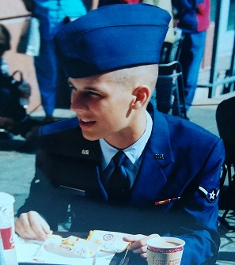
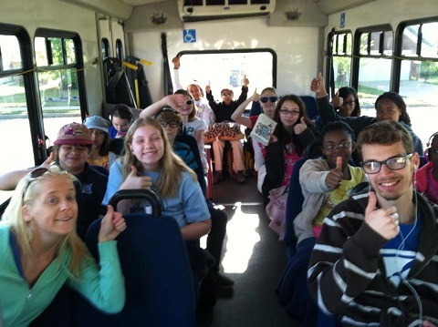

My Story
Early Days
Being raised in the 90's I always describe to my colleagues that I "grew up in front of computers." This was also true of the mainstream market adoption of the internet during the late 90's and early 2000's. So it seemed that if I wasn't playing on a computer growing up, I was fixing them whenever my parents had a problem. This was more or less the start of my career in IT.
Military
During my senior year of high school, my dad took me to talk to an Air Force recruiter, just to see what they had to offer. After taking the ASVAB, the recruiter told me I was qualified to do "Computer, Networking, and Cryptographic Systems" as a reservist. This sounded like a great fit for me, and I really wanted the tuition benefits to help me through college.

IT and Teaching
After several years of working in IT, being a reservist, and working on my bachelor's degree, I finally graduated! During one of those years, I also had the chance to teach courses in computer basics and Mathematics for a small Montessori school.

Present
After some personal reflection, I decided I wanted to pursue a graduate degree. I accepted a job with Georgia Tech and worked my way through a master's degree program in Computer Science with the University of West Georgia. After just two years, I graduated and accepted my first Software Development job with Georgia Tech's Office of Information Technology.